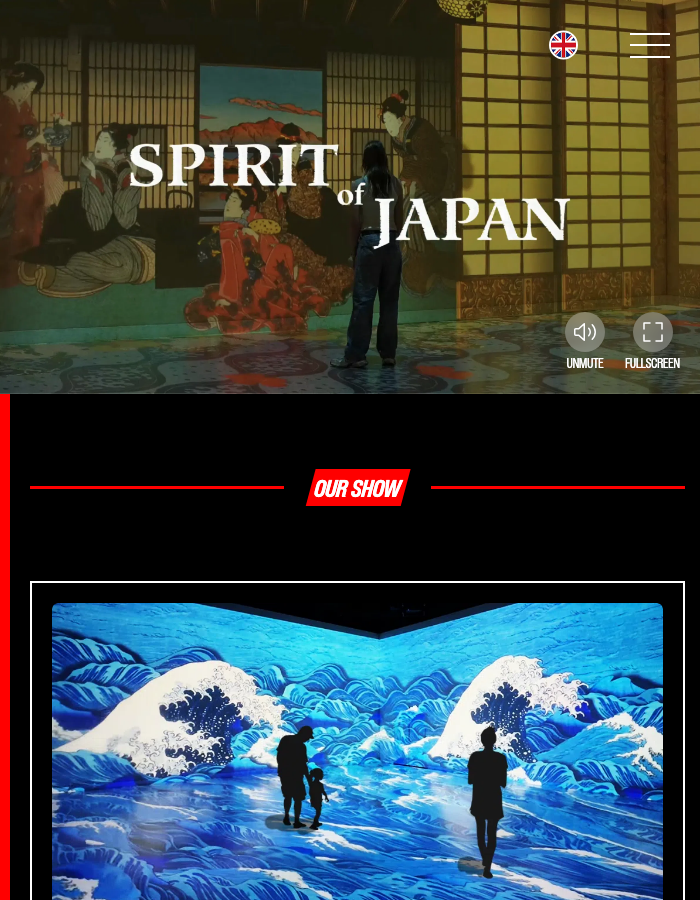
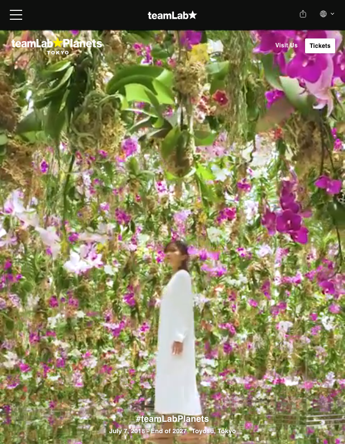
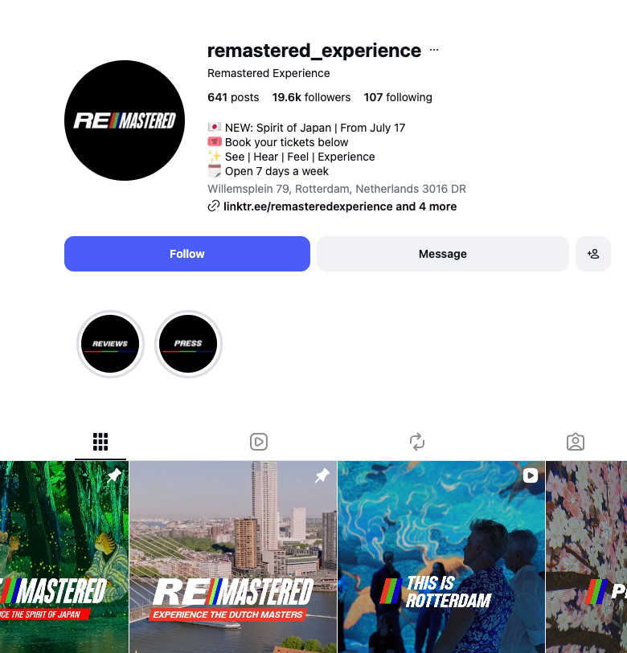
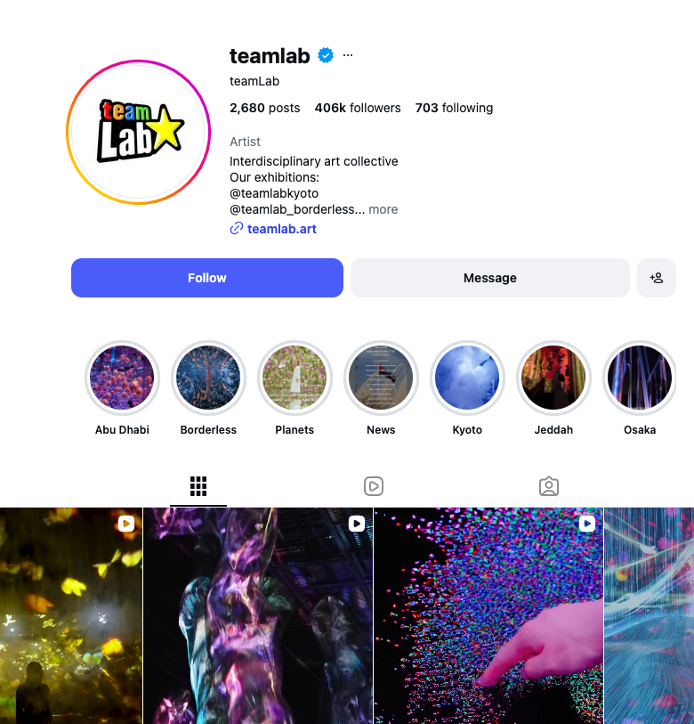
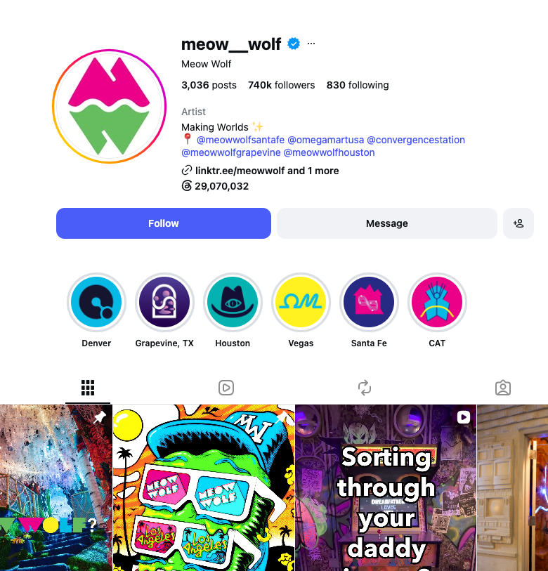
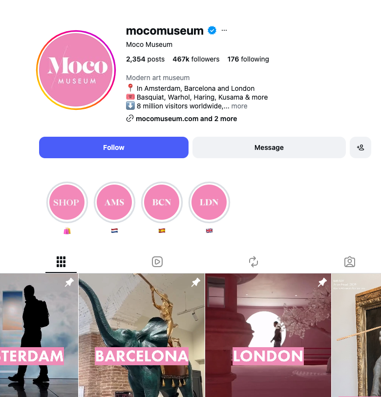
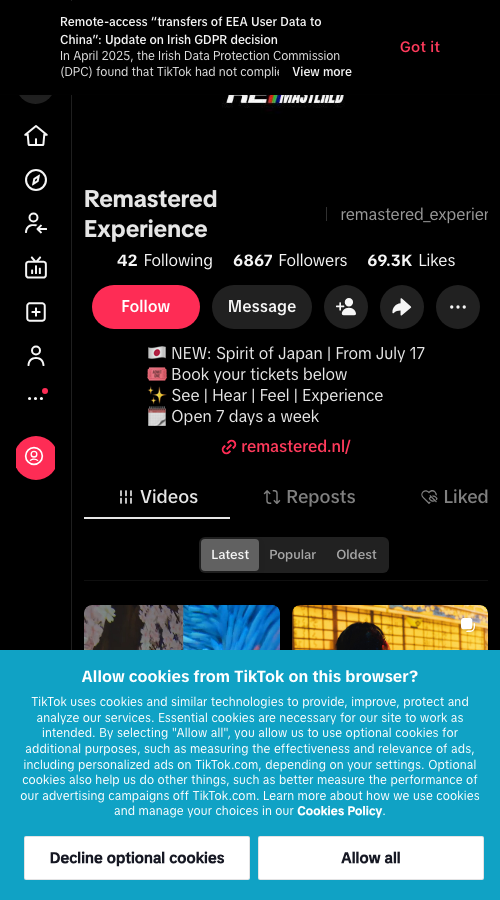
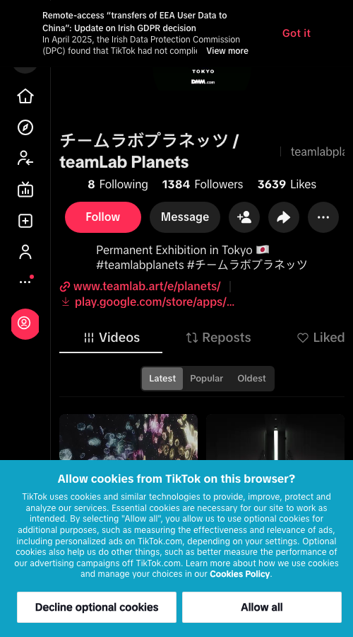

Key conclusions
The company
An immersive digital art experience beneath Rotterdam's Erasmusbrug, founded by Robin Groeneveld and Dick van Zuylen in 2021.
The role
Algemeen Directeur (Managing Director) — the first dedicated commercial leadership hire, growing visitors, revenue and international readiness alongside the founders' creative direction.
Market context
Dutch day attractions drew 46M+ visits in 2025, inside a European immersive entertainment market growing from $36.4B to $132.3B by 2031.
Contents
- Company & market context
Founders, venue, visitor growth to ~500K, live-verified slot capacity, estimated revenue & P&L, Dutch attraction & immersive-market sizing. - Competition
6 Dutch + 6 global immersive experiences, visitor mix, and 3 best-in-class digital marketing reference points. - Website
Remastered vs. teamLab Planets, side by side. - Social Media
Instagram, TikTok, YouTube — Remastered vs. teamLab, Meow Wolf and Moco Museum. - Customer Service
Review platforms (GetYourGuide, TripAdvisor, Facebook) and website help/support channels. - Commercial channels today
Ticketing, groups, corporate hire — what exists vs. what the mandate asks to build. - Corporate Clients
Pricing benchmarks (Remastered, Frameless) and revenue-potential scenarios. - Strengths & Opportunities
By topic: Customer Service, Awareness & AI Discoverability, Commercial Model, Visitor Experience. - 3 priorities
Commercial model · leadership mandate · international readiness. - Role scope & Olga's experience
Six accountability areas mapped to Olga's experience — plus 5-step priority stack. - KPI framework
4 layers: business impact, commercial channels, visitor outcomes, operational excellence.
Visitors — five-year mark
~500K
Half a million visitors at the 5-year anniversary, mid-2026. AD.nl via Drimble
Venue technology
245M px
60 projectors, 50 speakers, Europe's largest indoor LED screen. Uitagenda Rotterdam
01
Company & Market
Company snapshot, visitor growth & market context
Company snapshot
Founders, venue and current commercial model
Founders
RG
Remastered
Robin Groeneveld
Founder & Creative Director
30 years in Dutch music & events — Vrienden van Amstel Live, venues on Rotterdam's Lijnbaan
DZ
Remastered
Dick van Zuylen
Founder
Former Managing Director, Mojo Events
Venue
1,500 m²
- Beneath the Erasmusbrug, Rotterdam
- 60 projectors · 50 speakers · 15 km cabling
- Europe's largest indoor LED screen
The Experience
5 masters
- Bosch, Vermeer, Rembrandt, Van Gogh, Mondrian
- Original score by DJ/producer Sam Feldt
- Two fixed 60-min shows running today
Tickets & Capacity
€24.50
- Adult (13+) · €16.50 child (6–12)
- 25% discount for CJP/EYC cardholders
- Timed entry, 80 visitors per slot
Corporate & Recognition
2024
- "Game Changer of the Year," Live Entertainment Production Awards
- Private corporate bookings already running, incl. a Lexus product launch
- Company outings & venue hire product live today
Sources: Brandpulse (founders, awards, corporate hire) · LinkedIn (Robin Groeneveld) · Uitagenda Rotterdam (venue technology) · remastered.nl FAQ (pricing, capacity)
Visitor growth, 2021–2026
Cumulative visitors since opening · four confirmed milestones
Roughly 200,000 visitors in the first two years, then another 250,000–300,000 across the following three — organic growth on word-of-mouth and press, already averaging close to the 100,000-a-year floor of the new target range.
Sources: Events.nl (opening) · Pretwerk (200,000th visitor) · LinkedIn job posting · AD.nl via Drimble (5-year mark)
Slot capacity by month, Aug–Dec 2026
August
~5,000
- 2 slots/day
- 31 days × 2 × 80
September
~2,400
- ~1 slot/day average
- 30 days × ~1 × 80
October
~3,680
- 46 slots across the month
- 2/day in the herfstvakantie week
November
~2,400
- ~1 slot/day average
- 30 days × ~1 × 80
December
~3,400
- 2/day across the kerstvakantie week
- 31 days, blended
October — every day, individually checked
| Date | Day | Slots | Date | Day | Slots |
|---|---|---|---|---|---|
| 10 Oct | Sat | 2 | 21 Oct | Wed | 2 |
| 11 Oct | Sun | 2 | 22 Oct | Thu | 1 |
| 12 Oct | Mon | 1 | 23 Oct | Fri | 2 |
| 13 Oct | Tue | 1 | 24 Oct | Sat | 2 |
| 14 Oct | Wed | 1 | 25 Oct | Sun | 2 |
| 15 Oct | Thu | 1 | 26 Oct | Mon | 1 |
| 16 Oct | Fri | 0 | 27 Oct | Tue | 1 |
| 17 Oct | Sat | 2 | 28 Oct | Wed | 1 |
| 18 Oct | Sun | 2 | 29 Oct | Thu | 1 |
| 19 Oct | Mon | 2 | 30 Oct | Fri | 2 |
| 20 Oct | Tue | 2 | 31 Oct | Sat | 2 |
The herfstvakantie week (17–25 Oct) runs 2 slots every day, including Monday — the only week in this data where a Monday carries the weekend rate. Outside that week, weekdays run 1 slot and weekends run 2. Real capacity runs at roughly half of what the FAQ's stated opening hours alone would suggest.
October: every bookable date from 10–31 individually checked on tickets.remastered.nl, 19 Aug 2026; 1–9 Oct sit outside the site's booking window from that date and use the same weekday/weekend pattern measured on 12–15 and 26–29 Oct. August, September, November and December use the same two measured rates — 2 slots/day in peak weeks (measured in August and the October school-holiday week), ~1/day in term-time weeks (measured across September and non-holiday October) — applied to the school-holiday calendar (herfstvakantie ~17–25 Oct, kerstvakantie ~21–31 Dec). Capacity per slot = 80, the FAQ's stated group cap. Only one experience ("Dutch Masters") is bookable — Regular, VIP and Family are ticket tiers of that single show, confirmed by checking the VIP ticket page separately; there is no second, separately-scheduled performance to split against.
Estimated revenue — not disclosed by Remastered, calculated from public inputs
| Basis | Calculation | Est. annual revenue |
|---|---|---|
| 3-yr average pace | ~97,000 visitors/yr × €23.30 blended ticket price | ~€2.3M |
| Role target range, for reference | 100,000–125,000 visitors/yr × €23.30 | €2.3M–€2.9M |
Visitor figures: the cumulative totals (10,000+ Sep 2021, 200,000 Jun 2023, ~500,000 Jul 2026) are sourced directly from press coverage, cited in the visitor-growth chart above. The ~97,000/yr figure is not published anywhere by Remastered — it is this brief's own calculation: (500,000 − 200,000) ÷ 37 months × 12, the only interval with two dated milestones. No single confirmed "last 12 months" figure exists in any public source.
Estimated P&L — current revenue only, not the target
| Line | Basis | Est. € |
|---|---|---|
| Revenue | ~97,000 visitors/yr × €23.30 (see above) | €2.3M (100%) |
| EBITDA | Industry benchmark margin, 16.39% | ~€377K |
| Net profit | Industry benchmark margin, 8.98% | ~€207K |
| Implied total costs | Revenue − Net profit | ~€2.1M (91%) |
How costs are estimated: Remastered publishes no P&L, so costs are the residual after applying a real, sourced margin — Revenue minus Net profit. EBITDA and Net profit margins are both taken directly from the Hotels, Tourism & Amusement industry, trailing twelve months to Q1 2026 (CSIMarket) — the closest published benchmark category, not Remastered's own figures or a category-by-category cost build (staff, rent, marketing), which no public source discloses for this business. No revenue or P&L is filed at KVK under a name findable for this business (checked 17 Aug 2026).
Where the 100,000–125,000 target sits in the Dutch day-attraction market
| Attraction | 2025 visits | Category |
|---|---|---|
| Efteling | 5.8M | #1 Dutch day attraction |
| Rijksmuseum, Amsterdam | 2.3M | #2 Dutch day attraction |
| Van Gogh Museum, Amsterdam | 1.9M | #3 Dutch day attraction |
| Diergaarde Blijdorp, Rotterdam | 1.39M | Rotterdam's own top-ranked day attraction |
| Remastered — role target | 100,000–125,000 | Rotterdam immersive-art attraction |
Sources: Efteling, Rijksmuseum, Van Gogh Museum — Landelijke Data Alliantie, Top 50 Dagattracties 2025 · Diergaarde Blijdorp — ZooFlits · Remastered target — LinkedIn job posting. The Dutch Top 50 attracted ~40M visits in total in 2025 (46M+ across all ticketed day attractions); Remastered does not appear in the published Top 50.
$36.4B → $132.3B
Europe Immersive Entertainment Market, 2025 → 2031
23.98% CAGR, 2026–2031. The category Remastered competes in is still in its early growth phase across Europe.
+25%
Rotterdam Business & MICE Tourism, 2025
1M business-tourism overnight stays, fully recovered to pre-COVID levels; 31 new congresses confirmed with an expected €41M+ economic spin-off. Overall hotel guests +2.4% to 1.81M.
Sources: Mordor Intelligence, Europe Immersive Entertainment Market · Rotterdam Partners tourism monitor, via persberichtenrotterdam.nl
02
Competitive Landscape
6 comparable immersive experiences in the Netherlands
| Experience | City / Venue | Format | Price | TikTok | YouTube | vs. Remastered | |
|---|---|---|---|---|---|---|---|
| Remastered | Rotterdam, beneath the Erasmusbrug | Custom-built 1,500 m² venue, 60 projectors, two fixed 60-min shows (Dutch Masters, Spirit of Japan) | €24.50 adult / €16.50 child | @remastered_experience (19.6K) | @remastered_experience (6,867) | No official channel found | Baseline |
| Fabrique des Lumières | Amsterdam, Westergasfabriek | 100+ projectors, walls up to 17m, exhibitions rotate roughly every quarter (Klimt, Dalí, Monet, Coldplay, Dutch Masters) | from €16–18 adult | @fabriquedeslumieres (63K) | @fabriquedeslumieres (5,848) | Culturespaces • Des Lumières (696)† | Cheaper, backed by an international chain (Culturespaces — Bordeaux, Paris, Seoul, Dubai) that rotates content quarterly. The closest and most direct competitor to Remastered's two-show format |
| Van Gogh: The Immersive Experience | Utrecht, Jaarbeurs (Hall 5) | 1,000+ m², 200+ works, VIP tier with VR add-on | pricing unpublished; site now lists the show as closed | @vangogh.experience (566K*) | @vangogh.experience (280,600*) | No single official channel confirmed — multiple region-specific channels exist | Larger footprint but a touring single-artist show that has already closed. Remastered's five-year run in a purpose-built venue has outlasted it — the huge follower count belongs to the global touring "Van Gogh Expo" brand, not the Utrecht site alone* |
| Van Gogh & Rembrandt in Amsterdam | Amsterdam, Noorderkerk (Jordaan) | 360° sound-and-light show in an active church, 40 min | €20 adult | @vangoghandrembrandt (12K) | @vangoghandrembrandt (530) | Vincent Meets Rembrandt (7) | Shorter and cheaper, staged in a borrowed church rather than a custom-built venue — lower production scale and a smaller Instagram following than Remastered |
| Rembrandt's Amsterdam Experience | Amsterdam, near Leidseplein | "5D" show in a reconstructed studio, 25 min, single-artist (Rembrandt only) | from €24.50 (VIP tier) | @rembrandtsadam (n/d) | Confirmed: no TikTok account exists | Citysaurus (22)‡ | Similar price point but less than half the running time and one artist, versus Remastered's five-artist, 60-minute format |
| Moco Museum — Digital & Immersive Art | Amsterdam | Immersive digital rooms as one wing inside a broader modern-art museum (Banksy, Warhol, Basquiat, Kusama) | from €19.95 (full museum ticket) | @mocomuseum (467K) | @mocomuseum (303,500) | Moco Museum (1,110) | Cheaper, but the immersive content is a bonus inside a general museum ticket, not a standalone destination the way Remastered is. Instagram/YouTube reflect the whole museum brand, not the immersive wing alone — but its 303,500 TikTok followers make it the single biggest social presence in this table |
Sources: remastered.nl · fabrique-lumieres.com, pricing per GetYourGuide/Tiqets resale listings (official site pricing is JS-rendered and could not be independently confirmed) · vangoghexpo.com · vangoghinamsterdam.com · tickets-amsterdam.com · mocomuseum.com. Instagram handles verified via each operator's own website; TikTok and YouTube figures were pulled directly from each platform's own public profile data (not a search engine snapshot), so they are exact at research date, not rounded estimates — the number in parentheses is the follower/subscriber count, a single point-in-time snapshot, not a live feed. Instagram counts remain search-snapshot estimates because Instagram blocks direct public profile scraping the way TikTok and YouTube do not; "n/d" there means the handle is confirmed but the count could not be independently verified. †Fabrique des Lumières has no channel of its own — it publishes on Culturespaces' shared "Des Lumières" channel, also used by Atelier des Lumières and Bassins de Lumières. ‡Citysaurus is Rembrandt's Amsterdam Experience's production company, not an experience-branded channel. *@vangogh.experience is the shared handle for the global "Van Gogh Expo" touring franchise linked from the Utrecht show's own page, not an Utrecht-only account.
Global benchmarks — comparable immersive experiences worldwide
| Experience | City | Established | Price | TikTok | YouTube | vs. Remastered | |
|---|---|---|---|---|---|---|---|
| teamLab Planets | Tokyo (Toyosu) | 2018 | ¥3,800–4,200 adult (~€23–26) | @teamlab (406K*) | @teamlabplanets (1,384) | teamLab ART (49.1K*) | The category's global benchmark — currently Tokyo's most-visited museum, eight years after opening, still on a single flagship site rather than a multi-city chain. Proof that one strong site can sustain demand indefinitely without expansion; it is scheduled to close at the end of 2027. Instagram/YouTube are teamLab's overall studio accounts (huge); the Planets-specific TikTok account is tiny by comparison — the studio brand carries the following, not the single site* |
| Hall des Lumières | New York (Manhattan) | 2022 | $30 adult / $15 youth | @halldeslumieres (55K) | @halldeslumieres (4,553) | Hall Des Lumieres (40) | Same operator (Culturespaces) as Amsterdam's Fabrique des Lumières, staged in a landmarked historic bank building — direct proof that Remastered's closest domestic competitor already runs the same format on three continents |
| Frameless | London | 2022 | £29.50 adult (from £20 evening "Lates") | @framelessldn (152K) | @framelessldn (6,521) | FRAMELESS (1,100) | Higher price than Remastered in one of the world's most expensive tourism markets, reinterpreting 40+ masterpieces across four galleries — evidence of price headroom in a major capital |
| Atelier des Lumières | Paris | 2018 | €16 adult / €11 child | @atelierdeslumieres (143K) | @atelierdeslumieres (17,200) | Culturespaces • Des Lumières (696)† | The original Culturespaces venue that Fabrique des Lumières and Hall des Lumières were built from — cheaper than Remastered, drew 1.2M visitors in its first year alone |
| Bassins de Lumières | Bordeaux | 2020 | €16 adult | @bassinsdelumieres (42K) | @bassinsdeslumieres (3,692) | Culturespaces • Des Lumières (696)† | Culturespaces' third site, built in a former WWII submarine base and marketed as the world's largest digital art centre — a concrete precedent for turning one flagship (Paris) into a multi-city, multi-country brand within two years |
| Meow Wolf — House of Eternal Return | Santa Fe, New Mexico | 2016 (collective founded 2008) | ~$32–35 adult | @meow__wolf (740K*) | @meowwolf (226.7K) | Meow Wolf (176K) | The most directly relevant precedent: an independent immersive-experience brand, not backed by an existing museum group, that raised $158M in outside investment to professionalize and expand from one city to Denver, Las Vegas and Grapevine, TX — the closest real-world model for what "prepare for international expansion" could look like for Remastered, and the single strongest social footprint of any name in this table. Follower counts are the corporate brand account; individual sites (e.g. @meowwolfsantafe) also run their own smaller accounts* |
Sources: teamlab.art · New York YIMBY (Hall des Lumières opening) · visitlondon.com & Time Out (Frameless pricing) · sortiraparis.com (Atelier des Lumières) · bassins-lumieres.com · Artnet News & Wikipedia (Meow Wolf funding & expansion) · pricing for teamLab, Frameless and Meow Wolf via official/resale ticket listings, current as of research date. Instagram handles verified via each operator's own website; TikTok and YouTube figures were pulled directly from each platform's own public profile data (not a search engine snapshot), so they are exact at research date, not rounded estimates. Instagram counts remain search-snapshot estimates because Instagram blocks direct public profile scraping the way TikTok and YouTube do not. †Atelier des Lumières and Bassins de Lumières share the same Culturespaces "Des Lumières" YouTube channel — neither has its own. *See note on shared/brand-level accounts.
Visitor mix — tourist vs. local, where operators actually disclose it
Of the 12 experiences above, only 4 publish anything about visitor origin, and none — Remastered included — publish a revenue split by visitor type (tourist / local / business). That level of segment reporting does not appear to exist publicly anywhere in this category. Building it would be a new capability, not something benchmarked against an established industry standard.
| Experience | Disclosed visitor mix | Business/corporate share | Source date |
|---|---|---|---|
| Remastered | 25%+ tourist / <75% domestic | Not disclosed | Jun 2023 |
| teamLab Planets (Tokyo) | ~33% international (Nov 2022), rising to 70% in a Mar–Aug 2023 window (~1M overseas visitors from 182 countries) | Not disclosed | 2022–2023 |
| Bassins de Lumières (Bordeaux) | 20%+ foreign tourists (Spanish, German, Dutch visitors named as most present) | Not disclosed | 2025 |
| Meow Wolf (Santa Fe) | 30% New Mexico residents / 70% out-of-state tourists | Not disclosed as a share, but corporate/private events are a confirmed, named revenue line generating part of >$1M/month in combined ticket, retail, food & beverage and events revenue | recent |
| Fabrique des Lumières, Van Gogh Utrecht, Van Gogh & Rembrandt Amsterdam, Rembrandt's Amsterdam Experience, Moco Museum, Hall des Lumières, Frameless, Atelier des Lumières | No visitor-origin or segment split found in any public source for these 8 experiences | — | |
Sources: Remastered — Pretwerk · teamLab — Business Wire, Nov 2022 & Business Wire, Aug 2023 · Bassins de Lumières — France 3 Nouvelle-Aquitaine · Meow Wolf — Santa Fe New Mexican (local/tourist split) & ImpactAlpha (revenue)
Best-in-class digital marketing — 3 reference points from the table above
Cleanest site of the set — one real photo, one CTA, a closing date built into the hero as urgency. The benchmark used in Sections 03–04.
The strongest total social footprint of any name in this table — built as an independent immersive brand, not a museum wing.
The single biggest TikTok following of any name in this table — 303,500 — from one wing inside a broader museum.
Figures per Section 02 tables above, captured directly from each platform's public profile data, 17 Aug 2026. *teamLab and Meow Wolf Instagram/YouTube figures are studio/brand-wide accounts, not experience-specific.
03
Digital Benchmark
Website — Remastered vs. teamLab Planets
Remastered

teamLab Planets (benchmark)

| Element | Remastered | teamLab Planets |
|---|---|---|
| Hero | Autoplay video, bold graphic type | Real photo of visitors inside the art |
| Navigation | Full menu + language switch + burger | Minimal: Visit Us, Tickets |
| Primary CTA | "Buy Tickets" per show card | Single "Tickets" button, top right |
| Homepage content | 2 show thumbnails + duration | The artwork itself, life-size |
| Urgency signal | None shown | Run dates on the hero ("Jul 2018–End of 2027") |
| Social proof | None on homepage | #teamLabPlanets hashtag on hero image |
Screenshots captured 17 Aug 2026 · remastered.nl · teamlab.art
04
Digital Benchmark
Social Media — Remastered vs. teamLab, Meow Wolf & Moco Museum
Instagram
@remastered_experience

@teamlab (benchmark)

@meow__wolf (benchmark)

@mocomuseum (benchmark)

| Metric | Remastered | teamLab | Meow Wolf | Moco Museum |
|---|---|---|---|---|
| Followers | 19.6K | 406K* | 740K* | 467K |
| Posts | 641 | 2,680 | 3,036 | 2,354 |
| Bio | 4-line: new show, tickets, tagline, hours | Studio bio, linked sister-site accounts | "Making Worlds" + linked city accounts | 3-line: cities, artists, visitor count |
| Link in bio | linktr.ee/remasteredexperience + 4 more | teamlab.art | linktr.ee/meowwolf + 1 more | mocomuseum.com + 2 more |
Sources: @remastered_experience · @teamlab · @meow__wolf · @mocomuseum, screenshots captured directly from each public profile, 19 Aug 2026. *teamLab and Meow Wolf are studio/brand-wide accounts covering every site (7 teamLab locations, 4 Meow Wolf locations), not experience-specific.
TikTok
@remastered_experience

@teamlabplanets (benchmark)

| Metric | Remastered | teamLab Planets | Meow Wolf | Moco Museum |
|---|---|---|---|---|
| Followers | 6,867 | 1,384 | 226.7K | 303.5K |
| Likes | 69.3K | 3,639 | 1.9M | 1.6M |
| Bio | 4-line: new show, tickets, tagline, hours | 1-line: exhibition dates + hashtags | 1-line: mission statement | 1-line: museum category |
| Link in bio | remastered.nl | teamlab.art + app store | meowwolf.com | mocomuseum.com |
Remastered's TikTok following and engagement already exceed teamLab Planets' dedicated account, though trail the multi-city Meow Wolf and Moco Museum brand accounts. Sources: @remastered_experience · @teamlabplanets · @meowwolf · @mocomuseum. Remastered and teamLab captured 17 Aug 2026, Meow Wolf and Moco Museum captured 19 Aug 2026, all directly from each profile's public data.
YouTube
| Metric | Remastered | teamLab | Meow Wolf | Moco Museum |
|---|---|---|---|---|
| Channel | No official channel | teamLab ART* | Meow Wolf | Moco Museum |
| Subscribers | — | 49.1K | 176K | 1,110 |
Instagram/YouTube profile pages are cookie-gated for anonymous visitors on some platforms — figures shown alongside screenshots where captured. Figures per Section 02 tables above, captured 17 Aug 2026 directly from each channel's public page. *teamLab's studio-wide channel, not Planets-specific.
05
Customer Intelligence
Customer Service — reviews & support channels
Review platforms
| Platform | Rating | Reviews | Signal |
|---|---|---|---|
| GetYourGuide | 4.3 / 5 | 2,419 | Largest review sample of any platform — praise for staff and visuals, interest in clearer room-to-room context |
| TripAdvisor | 3.5 / 5 | 89 | 35×5★ / 20×4★ / 11×3★ / 7×2★ / 16×1★ — praised as immersive and family-friendly, mixed views on value for price |
| 92% recommend | 134 | Strong recommend rate on the venue's own page-native review sample | |
| Trustpilot | No profile | — | No Trustpilot listing exists for remastered.nl, checked directly 17 Aug 2026 |
TripAdvisor — star split & review themes
Remastered — 3.5 / 5 across 89 TripAdvisor reviews
Positive = 4★ and 5★ (55) · Neutral = 3★ (11) · Negative = 1★ and 2★ (23). Lifetime distribution, all 89 reviews.
Where reviewers report friction
- Recurring — Overcrowding at busy time slots ("50 people... crowded," "wish it was less crowded")
- Recurring — Pricing relative to the experience ("massively overpriced," "not worth the money")
- Mentioned — Room-to-room narrative clarity (GetYourGuide: "a simple storyline would make the rooms easier to follow")
- Mentioned — AI-generated content quality in one room
What reviewers value
- Recurring — Immersive visuals & audio ("amazing effects great music," "wonderful audiovisual journey")
- Mentioned — Interactive moments (drawing feature projected live, UFO-flying room)
- Mentioned — Helpful on-site staff (GetYourGuide)
- Mentioned — Family-friendly, suitable for all ages
Star split is counted across all 89 TripAdvisor reviews. Themes are drawn from individual review excerpts surfaced via search and the GetYourGuide review summary — TripAdvisor and GetYourGuide both block direct automated page reads (confirmed 17 Aug 2026), so this is a real but small, directional sample, not a themed count of the full base.
Sources: TripAdvisor · GetYourGuide
Website — help & support
Contact
Email
- info@remastered.nl for general enquiries
- groepen@remastered.nl for groups
- No phone, live chat or WhatsApp listed
Payment
Card only
- Debit and credit card accepted
- Cash explicitly not accepted at the venue
Accessibility
Wheelchair
- Wheelchair accessible, standard chairs available
- Electric wheelchairs not accommodated
- Epilepsy warning listed for lighting effects
Cancellation
Reschedule
- Tickets are non-refundable
- Reschedule via the link in the confirmation email
Languages
5
- Dutch, English, German, French, Simplified Chinese
Check-in
Mobile QR
- Ticket scanned from smartphone
- Printing not required
Source: remastered.nl FAQ, captured 17 Aug 2026.
Customer service channels — Remastered vs. teamLab Planets
| Channel | Remastered | teamLab Planets |
|---|---|---|
| info@remastered.nl (general) · groepen@remastered.nl (groups) | Contact form + emergency@teamlabplanetstickets.tokyo for urgent booking issues | |
| Phone | Not offered | Not offered — replies by email only |
| Live chat | Not offered | Not offered |
| Not offered | Not offered | |
| Review response | Management responds directly to TripAdvisor reviews | n/d |
Email-only support with no phone line is the category norm at both sites — neither TripAdvisor nor GetYourGuide publish a reply-time metric the way Trustpilot does, so response speed itself isn't independently measurable for either. Sources: remastered.nl FAQ · teamLab Planets Help · TripAdvisor (management response confirmed).
2,600+ reviews across GetYourGuide, TripAdvisor and Facebook lean toward a strong recommend rate, led by GetYourGuide's 2,419-review sample at 4.3/5; TripAdvisor's 89-review base splits 61.8% positive. Support runs on a single, actively-managed email channel — matching teamLab Planets' own email-only model — with card-only payment and a 5-language, mobile-check-in site.
06
Commercial Model
Commercial channels today — what exists and what the mandate asks to build
Live
Individual & Family Ticketing
€24.50 adult / €16.50 child + service fee. Timed entry, max 80 visitors per slot. The primary and largest confirmed revenue line.
Weight
Live
Groups & Schools
Group rates for 25+, dedicated school pricing. Established but secondary to individual ticketing.
Weight
Ad hoc
Corporate Hire & Company Outings
Private venue hire already runs case-by-case, including a Lexus product launch — the foundation for a repeatable, priced product.
Weight
To build
Sponsorship, Partnerships & Hospitality
Named explicitly in the mandate as new revenue streams to build.
Weight
Sources: remastered.nl FAQ · Brandpulse (Lexus corporate hire example) · LinkedIn job posting · Weight = estimated share of commercial focus today, not disclosed revenue split
07
Commercial Model
Corporate Clients — pricing benchmarks & revenue potential
What Remastered already charges
| Package | Price | Capacity |
|---|---|---|
| Corporate outing (drinks + The Experience) | from €49.00 pp, excl. VAT | Group booking, size on request |
| Full-venue exclusive hire | Price on request | Up to 300 (event layout), 500 max guests |
| Confirmed precedent | Lexus product launch (price not disclosed) | — |
Sources: Rotterdam Business Events & Have Fun Events (€49pp package, both list the same starting price) · remastered.nl — Events & Meetings (capacity) · Brandpulse (Lexus).
Comparable venue-hire pricing
| Venue | Exclusive hire price | Capacity |
|---|---|---|
| Frameless, London | £18,000–£23,000 (one evening, 17:30–23:00) | Up to 450 |
| Remastered, Rotterdam | Price on request | Up to 500 |
Source: Hirespace — Frameless exclusive hire. Remastered's larger capacity sits above Frameless's own published price band.
Revenue potential — package-model scenarios
| Frequency | Avg. group size | Events/year | Est. annual revenue |
|---|---|---|---|
| 1× per month | 150 | 12 | ~€88K |
| 1× per week | 150 | 52 | ~€382K |
| 2× per week | 150 | 104 | ~€764K |
Calculation: 150 guests × €49.00 pp × events/year — an assumption, not a disclosed booking volume (Remastered publishes neither event frequency nor revenue). Base price and capacity are sourced above; frequency and group size are scenario inputs to illustrate range. Frameless's £18,000–23,000 exclusive-hire band suggests meaningful pricing headroom above the €49pp package model if Remastered priced full-venue exclusivity as a separate, higher-value product.
08
Synthesis
Strengths & Opportunities — by topic
Customer Service
Strength — TikTok already leads the benchmark
6,867 followers and 69.3K likes already exceed teamLab Planets' own TikTok account (Section 04).
Opportunity — multilingual chatbot
Instant answers on tickets, hours and access, in the site's 5 languages; escalate purchase issues straight to a person, with broader complaints handled separately.
Awareness & AI Discoverability
Strength — listed on Rotterdam's official tourism site
A dedicated Remastered listing already runs on rotterdam.info, the city's own tourism board site.
Opportunity — structured data for AI search
No TouristAttraction/LocalBusiness schema or llms.txt file found (checked 18 Aug 2026) — only generic Organization/WebSite markup. Adding both is a direct lever for AI Overviews and assistant-driven "things to do in Rotterdam" queries.
Commercial Model
Strength — corporate package already proven
€49pp package with a confirmed Lexus precedent (Section 07) — a repeatable foundation to scale.
Opportunity — exclusive full-venue hire as its own product
Frameless (London) prices exclusive hire at £18,000–23,000/evening (Section 07) — Remastered's larger 500-guest capacity sits above that benchmark.
Visitor Experience & Growth
Strength — half a million visitors on word-of-mouth alone
Five years of organic growth with no paid-acquisition spend disclosed anywhere publicly.
Opportunity — additional weekday timeslots
A direct, immediate lever toward the 100,000–125,000 target, alongside dwell-time and pricing (Section 01).
Sources: Section references point to the analysis earlier on this page; schema/llms.txt checked directly on remastered.nl, 18 Aug 2026.
Role Analysis
3 priorities this role is built to lead
01
Building a multi-line commercial model
- Ticketing (€24.50 adult / €16.50 child) is the proven foundation after five years of operation
- The mandate names corporate events, product launches, sponsorship, partnerships and hospitality as new revenue lines to build
- The opportunity: turn five years of proven ticketing traction into a multi-line commercial model
Source: LinkedIn job posting · remastered.nl
02
A new commercial leadership mandate
- The Managing Director role is a new hire, described in the posting as "an entrepreneurial opportunity rather than a traditional management position"
- The founders have led commercial growth directly to roughly 500,000 visitors in five years — the role scales what they've built
- The opportunity: build a professional commercial layer on a founder-led attraction with proven organic demand
Source: LinkedIn job posting
03
International expansion readiness
- The posting explicitly names "prepare for international expansion" as part of the mandate
- Professionalizing organizational operations is listed alongside the growth and revenue mandate
- The opportunity: build the governance, reporting and commercial playbook that international expansion requires
Source: LinkedIn job posting
09
Role scope
Algemeen Directeur — six accountability areas & Olga's experience
01
Commercial Growth & P&L Ownership
Drive visitor growth toward 100,000–125,000 annual visitors and own the commercial result end to end — the entrepreneurial core of the role.
Annual visitors
Revenue growth
P&L ownership
Olga's experienceRichemont: P&L accountability for a €150M e-commerce business across 12 luxury Maisons and 26 European countries, driving 30%–250% annual revenue growth by identifying and scaling commercial levers. adidas: developed the Digital Partners Commerce strategy and execution framework.
02
Corporate Events, Product Launches & Business Development
Develop corporate events, product launches and business arrangements as a distinct, repeatable commercial line — not one-off private hire.
Corporate bookings
Key accounts
Deal value
Olga's experienceNike: drove e-commerce and omni-channel business development with strategic key accounts, including leading the digital transformation of Intersport, the largest European sporting goods retailer. Richemont: business development across 12 Maisons and third-party vendor relationships.
03
New Revenue Streams — Sponsorship, Partnerships & Hospitality
Build sponsorship, brand partnership and hospitality revenue beyond ticketing — the second and third income lines named in the mandate.
Partnerships signed
New revenue mix
Brand fit
Olga's experienceadidas: built the vision for an integrated marketplace spanning own channels, retailers, pure players and partners. Richemont: transformed the Client Relations Centre from a cost centre into a revenue-generating e-boutique — a new commercial channel built from scratch.
04
Visitor Experience & Dwell Time
Improve visitor experience and average duration of stay — paired explicitly in the mandate with the visitor-growth target, not treated as separate.
Dwell time
Satisfaction score
Repeat visits
Olga's experienceRichemont: owned CRM (Salesforce) and customer experience across 12 Maisons; built the omni-channel analytics cockpit tracking conversion, NPS and OSAT for operational and executive stakeholders.
05
Organizational Professionalization
Professionalize organizational operations — named directly in the posting as a precondition for both growth and international expansion.
Governance
Reporting cadence
Process maturity
Olga's experienceRichemont: built and led a 240+ FTE team end-to-end; established the reporting & analytics function and governance/SLA frameworks from scratch across country operations. IBM: supply chain process design and change management for Numico, Avebe, SGV Group and Stiho.
06
International Expansion Readiness
Prepare the concept for international expansion — the final item in the mandate, sequenced after growth and professionalization are proven at home.
Expansion case
Playbook readiness
Market selection
Olga's experienceRichemont: directed digital strategy and operations across 26 European countries and 3 distribution centres. adidas: drove the EU omni-channel vision and designed the EU network of stock points across markets.
Priority stack — 5-step approach
| # | Action | Why first | Output |
|---|---|---|---|
| 1 | Map the current commercial baseline — audit ticketing revenue, cost base, existing corporate/group booking volume, and the visitor journey from arrival to exit | Growth and diversification targets need a real baseline, not an anecdotal read of what already works | Baseline commercial model; visitor funnel map; dwell-time diagnostic |
| 2 | Build the corporate & hospitality revenue line — formalize a repeatable corporate events, product-launch and hospitality package from existing ad hoc precedent | Named first in the mandate; existing private-event precedent is the starting point for a sellable, repeatable product | Priced corporate/hospitality product with a defined sales process |
| 3 | Establish a sponsorship & partnership framework — define categories, pricing and rights for brand sponsorship and partnership deals | Sponsorship and partnerships are named as a distinct revenue stream from corporate hospitality — they need their own commercial structure | Partnership framework with 2–3 anchor conversations underway |
| 4 | Scale toward 100,000–125,000 annual visitors — combine the new revenue lines with visitor-experience and dwell-time improvements to lift volume and yield together | The mandate pairs the visitor target with improving experience and duration of stay, not volume in isolation | Growth plan tracked monthly against the 100K–125K range |
| 5 | Build the international-expansion case — package the professionalized Rotterdam operating model (governance, KPI framework, commercial playbook) to support the expansion named in the mandate | Named last in the mandate — sequenced last here because it depends on steps 1–4 being proven at home first | International expansion business case grounded in Rotterdam performance data |
10
KPIs
Full KPI framework — four layers
Business impact — headline metrics
Annual visitor count
Tracked against the stated 100,000–125,000 target range. The single metric the role is measured against first
Revenue diversification ratio
% of total revenue from non-ticketing sources (corporate, sponsorship, hospitality). Directly measures whether the second and third revenue lines are real
Commercial channel performance
Corporate & hospitality bookings
Count and average deal value of corporate events, product launches and hospitality packages sold
Sponsorship & partnership deals signed
Number and value of active sponsorship or brand-partnership agreements
Group & school booking volume
Growth in the existing, secondary group-ticketing channel
Visitor experience outcomes
Average visitor dwell time
Named directly in the mandate alongside the visitor target — a lever for both experience quality and per-visit yield
Visitor satisfaction score
Review and rating performance across public platforms — the leading indicator behind five years of word-of-mouth growth
Repeat-visit & referral rate
The mechanism behind organic growth to date; protecting it while adding paid and corporate channels is a genuine trade-off to manage
Operational excellence
Time-slot occupancy rate
Visitors per slot against the confirmed 80-visitor capacity ceiling — the physical constraint on ticketing revenue
Cost-to-revenue ratio
Operating efficiency as new revenue lines and headcount are added — the professionalization mandate made measurable
International-expansion readiness milestones
Governance model, financial model and commercial playbook completed — the concrete deliverables behind "prepare for international expansion"